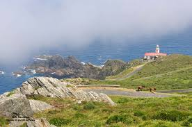

Galicia es otro tesoro de España. En esta ocasión, la ruta comienza en Ourense, en la N-120, y pasa por: Os Peares, Monforte, Doade, Castro Caldelas, Sas de Penelas, Montefurado, O Barco, Puente de Domingo Flórez, Carucedo y hasta terminar en Ponferrada. Montar en moto por tierras gallegas supone una experiencia espectacular en la que disfrutar de carreteras de curvas, paisajes verdes y una gama de fauna animal muy variada. Las vacas serán tus mejores compañeras de viaje. ¡Cuidado con ellas!
